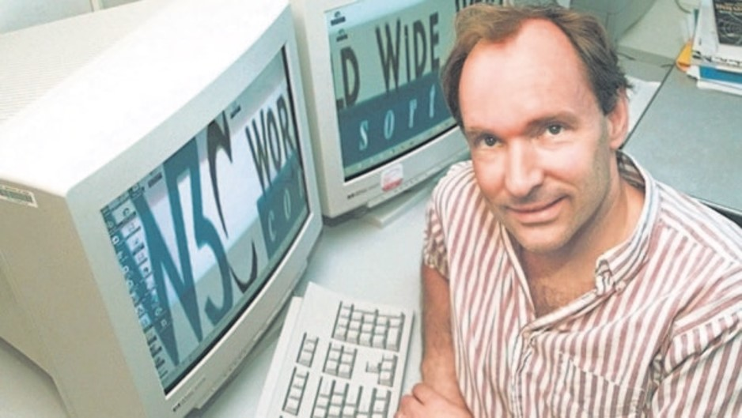

LA INFRAESTRUCTURA DE LA WEB
W3C
En 1993, Berners-Lee se mudó hacia EUA, para trabajar en el Laboratorio de Ciencias de la Computación e Inteligencia Artificial del MIT.
Fue con el paso de los meses cuando se dio cuenta de que la web debería estar estandarizada, para evitar la división del sistema en distintos
subsistemas incompatibles que impidan la navegación fluida de los usuarios.
Tim Berners-Lee en su salón de clases en el MIT
Fue por ello, junto con la coordinación del Laboratorio de Ciencias de la Computación del Instituto de Tecnología de Massachusetts,
en colaboración con CERN, y el apoyo de DARPA y la Comisión Europea, se creó el World Wide Web Consortium (W3C) con la finalidad de
crear los estándares de una web universal, accesible, fácil de usar y en la que todo el mundo pueda confiar. Además, la W3C pretende
evitar la fragmentación de la Web, mejorando sus infraestructuras para que se pueda evolucionar hacia una web con la información más organizada.
Logotipo de World Wide Web Consortium
Con el paso de los años, la W3C se fue expandiendo, para que en abril de 1995, INRIA (Instituto Nacional de Búsqueda en Información
y Automatización) se convirtió en el primer anfitrión europeo del W3C, seguido por la Universidad Keio de Japón (Campus Shonan Fujisawa)
en Asia en 1996. Para el 2003, ERCIM (Consorcio Europeo de Investigación en Informática y Matemáticas) asumió el papel de anfitrión europeo
del W3C de INRIA. En 2013, el W3C anunció la Universidad de Beihang como el cuarto anfitrión. La W3C está expandiendo sus oficinas en más de
18 países alrededor del mundo, bajo la dirección de Tim Berners-Lee.

Tim Berners-Lee junto al logo World Wide Web Consortium
«La web es más una creación social que técnica. La diseñé para un efecto social —para ayudar a las personas que trabajan juntas—
y no como un juguete técnico. El objetivo último de la web es apoyar y mejorar nuestra existencia en la telaraña mundial.
Nos agrupamos en familias, asociaciones y empresas. Desarrollamos la confianza a grandes distancias, y la desconfianza a la vuelta de la esquina».
> Tim Berners-Lee en "Weaving the Web: el diseño original y el destino final de la World Wide Web".
> Tim Berners-Lee en "Weaving the Web: el diseño original y el destino final de la World Wide Web".
Investigado y Programado por: Joel Alfonso Álvarez del Castillo Romo